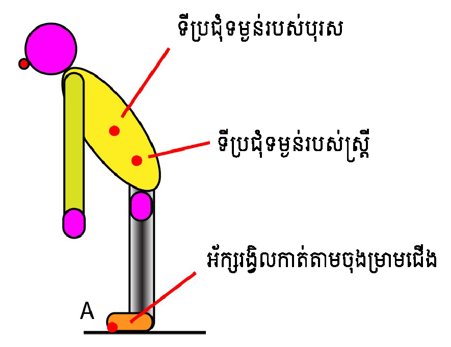

ជំពូក ២ : លំហមេទ្រីក (Metric Spaces)
October 2nd, 2020
From Wikipedia:
The plane (a set of points) can be equipped with different metrics. In the taxicab metric the red, yellow, blue, and green paths have the same length ($12$), and are all shortest paths. In the Euclidean metric, the green path has length $\sqrt {2}\approx 8.49$, and is the unique shortest path, whereas the red, yellow, and blue paths still have length $12$.
In 1906 Maurice Fréchet introduced metric spaces in his work Sur quelques points du calcul fonctionnel in the context of functional analysis: his main interest was in studying the real-valued functions from a metric space, generalizing the theory of functions of several or even infinitely many variables, as pioneered by mathematicians such as Cesare Arzelà. The idea was further developed and placed in its proper context by Felix Hausdorff in his magnum opus Principles of Set Theory, which also introduced the notion of a (Hausdorff) topological space.[7]
General metric spaces have become a foundational part of the mathematical curriculum.[8] Prominent examples of metric spaces in mathematical research include Riemannian manifolds and normed vector spaces, which are the domain of differential geometry and functional analysis, respectively.[9] Fractal geometry is a source of some exotic metric spaces. Others have arisen as limits through the study of discrete or smooth objects, including scale-invariant limits in statistical physics, Alexandrov spaces arising as Gromov–Hausdorff limits of sequences of Riemannian manifolds, and boundaries and asymptotic cones in geometric group theory. Finally, many new applications of finite and discrete metric spaces have arisen in computer science.
In mathematics, a metric space is a set together with a notion of distance between its elements, usually called points. The distance is measured by a function called a metric or distance function.[1] Metric spaces are the most general setting for studying many of the concepts of mathematical analysis and geometry.
Since they are very general, metric spaces are a tool used in many different branches of mathematics. Many types of mathematical objects have a natural notion of distance and therefore admit the structure of a metric space, including Riemannian manifolds, normed vector spaces, and graphs. In abstract algebra, the p-adic numbers arise as elements of the completion of a metric structure on the rational numbers. Metric spaces are also studied in their own right in metric geometry[2] and analysis on metric spaces.[3]
Many of the basic notions of mathematical analysis, including balls, completeness, as well as uniform, Lipschitz, and Hölder continuity, can be defined in the setting of metric spaces. Other notions, such as continuity, compactness, and open and closed sets, can be defined for metric spaces, but also in the even more general setting of topological spaces.
 The plane (a set of points) can be equipped with different metrics. In the taxicab metric the red, yellow, blue, and green paths have the same length ($12$), and are all shortest paths. In the Euclidean metric, the green path has length $\sqrt {2}\approx 8.49$, and is the unique shortest path, whereas the red, yellow, and blue paths still have length $12$.
The plane (a set of points) can be equipped with different metrics. In the taxicab metric the red, yellow, blue, and green paths have the same length ($12$), and are all shortest paths. In the Euclidean metric, the green path has length $\sqrt {2}\approx 8.49$, and is the unique shortest path, whereas the red, yellow, and blue paths still have length $12$.
The concept of a metric space is an elementary yet powerful tool in analysis. And while it is not sufficient to describe every type of limit we can find in modern analysis, it gets us very far indeed.
អំណេះតទៅ យើងសន្មតការកំណត់សរសេរអក្សរដិតត្រង់ $\E$ ឬ $\vect{\E}$ តាងអោយលំហវ៉ិចទ័រមួយកំណត់លើកាយ $\mathbb K$ (អាចជា $\R$ ឬ $\Cc$) ហើយបើសរសេរទ្រេត $A$ គឺតាងអោយចំណុចមួយរបស់លំហអាហ្វីន $\calE$ $-$ លើកលែងតែមានការកំណត់ផ្សេងពីនេះ នៅក្រោយទៀត។
- A
- B
និយមន័យ និង Notation
Let \(X\) be a set and let \(\d \colon X \times X \to {\mathbb{R}}\) be a function such that
- Nonnegativity: \(\d(x,y) \geq 0\) for all \(x, y\) in \(X\)
- Metric zero: \(\d(x,y) = 0\) if and only if \(x = y\) for all \(x, y\) in \(X\)
- Symmetry: \(\d(x,y) = d(y,x)\) for all \(x, y\) in \(X\)
- Triangle inequality: \(d(x,z) = d(x,y)+ d(y,z)\) for all \(x, y, z\) in \(X\)


កំណត់សម្គាល់ :
- An affine space is basically a vector space without an origin.
- បើ $\mathcal{E}$ ជាលំហអាហ្វីន តាមទិសដៅ $\vect{\E}$ នោះធាតុរបស់ $\mathcal{E}$ ហៅថា ចំណុច ហើយគេកំណត់សរសេរដោយអក្សរធំ $A,B, C,\ldots $។
- ធាតុរបស់លំហ $\vect{\E}$ ហៅថា វ៉ិចទ័រ ហើយកំណត់សរសេរដោយអក្សរតូច មានសញ្ញាព្រួញនៅខាងលើ គឺ $\vec{i}, \vec{j}, \vec{k}, \vec{u}, \vec{v}, \cdots $។ ក្នុងករណីខ្លះទៀត គេសន្មតសរសេរវ៉ិចទ័រដោយមិនមានសញ្ញាព្រួញទេ!
- ជួនកាល គេតាងលំហអាហ្វីនដោយ $(\mathcal E, \vect{\E}, +)$ ហើយដើម្បីសម្រួលដល់ការយល់និយមន័យខាងលើ គេកំណត់បម្រែបម្រួលនិយមន័យផ្សេងមួយទៀត ដូចខាងក្រោម៖
គេហៅ $(\mathcal E, \vect{\E}, +)$ ជាលំហអាហ្វីន បើមានអនុវត្តន៍ : \[ \begin{array}{rcl} + :\; \mathcal E \times \vect{\E} &\longrightarrow & \mathcal E\\ (A, \vec v) &\longmapsto & A +\vec{v} \end{array} \] ដែលផ្ទៀងផ្ទាត់៖
- The zero vector acts as an identity: for all $A \in \mathcal E, A +\vec{0}= A$
- Addition of vectors correspond to translations: for all $A \in \mathcal E$ and $\vec{u}, \vec{v} \in \vect{\E}, A +(\vec{u}+\vec{v})=(A+\vec{u})+\vec{v}$
- For any $A, B \in \mathcal E$, there's a unique free vector $\vec{u} \in \vect{\E}$ such that $A+\vec{u}=B$
ចំណាំ: នៅក្នុងបរិបទខ្លះ ធាតុរបស់លំហវ៉ិចទ័រកំណត់លើកាយ $\mathbb{R}$ ត្រូវបានចាត់ទុកថាជា ចំណុច ឬជា វ៉ិចទ័រ ក៏បាន។
- បើ $\dim\big(\vect\E\big)=1$ នោះគេនិយាយថា $\mathcal{E}$ គឺជា បន្ទាត់អាហ្វីន។
- បើ $\dim\big(\vect\E\big)=2$ នោះគេថា $\mathcal{E}$ គឺជា ប្លង់អាហ្វីន។
- គ្រប់លំហវ៉ិចទ័រ $\vect{\E}$ កំណត់លើកាយ $\mathbb{R}$ តាមន័យកាណូនិច អាចចាត់ទុកថាជាលំហអាហ្វីនមួយ ដែលភ្ជាប់ទៅនឹងខ្លួនវា នៅពេលណាគេមានអនុវត្តន៍ដូចតទៅ៖ $$ \begin{array}{ccl} \vect\E\times \vect\E &\longrightarrow & \vect\E\\ (a,b) &\longmapsto & \vect{ab} = b-a \end{array} $$ ដែលផ្ទៀងផ្ទាត់ទៅនឹងលក្ខខណ្ឌនៃនិយមន័យខាងលើ។
ពិនិត្យសំណុំរង $\mathcal L$ របស់ $\mathbb R^2$ ដែលជាសំណុំចំណុចកំណត់ដោយ
$$\mathcal L=\bigl\{(x,y)\in \mathbb R^2\mid -x+y-2=0\bigr\}$$
We can see that any point of the form $(x, y)=(x, 2+x)$, the line can be made into an affine space by defining $+: \mathcal L \times \mathbb R\rightarrow \mathcal L$, so that for any $u \in \mathbb R$ and any $P\in \mathcal L$:
\[
\begin{array}{rcl}
+ :\; \mathcal L\times \mathbb R &\longrightarrow & \mathcal L\\
\bigl(P, u\bigr) &\longmapsto & (x, 2+x)+u = (x+u, 2+x+u)
\end{array}
\]
For example the point $(-2,0)$ added with the vector $u=(1,1)$ results in the point $(-1,1)$ which belongs to the set $\mathcal L$.
Note that the vector space $\bbR$ is the line of equation $-x+y=0$, meaning that all vectors are parallel to $\vec u=(1,1)$.
វិធានគណនា
យក $\mathcal{E}$ ជាលំហអាហ្វីនភ្ជាប់ទៅនឹងលំហវ៉ិចទ័រ $\vect{\E}$ ។ ដូច្នេះគេបាន
- $\forall M, N \in \mathcal{E},\ \vect{AM}= \vect{AN}\Longrightarrow M = N$
- $\forall A, B \in \mathcal{E},\ \vect{AB} =\vect{0} \Longleftrightarrow A=B$
- $\forall A, B \in \mathcal{E},\ \vect{BA} = -\vect{AB}$
- $\forall A, B, C \in \mathcal{E},\ \vect{BC} = \vect{AC} - \vect{AB}$
- ចំពោះគ្រប់ចំណុច $A\in \mathcal{E}$ និងគ្រប់វ៉ិចទ័រ $\vect{u} \in \vect\E$ នោះមានចំណុចតែមួយគត់ $M\in \mathcal{E}$ ដែល $\vect{AM} = \vect{u}$
- បើ $A$ និង $B$ គឺជាចំណុចពីររបស់ $\mathcal{E}$ នោះមានវ៉ិចទ័រតែមួយគត់ $\vect{u}\in \vect\E$ ដែល $\vect{AB} = \vect{u}$
- តាមលក្ខណៈទី១ នៃនិយមន័យគេបានអនុវត្តន៍ \[\begin{array}{rrll} \phi: & \mathcal{E} &\longrightarrow &\vect\E\\ & M &\longmapsto &\phi(M) = \vect{AM} \end{array}\] គឺជាអនុវត្តន៍មួយទល់មួយ។ ដោយ $\varphi$ ជាអនុវត្តន៍ប្រកាន់ ដូច្នេះ គេទាញបានចម្លើយ។
- $(\Leftarrow)$ តាមទំនាក់ទំនងហ្សាល ចំពោះគ្រប់ $A\in \mathcal{E}$ គេបាន $$\vect{AA}+\vect{AA}=\vect{AA}\quad \text{ so } \quad \vect{AA}=\vect{0}$$ $(\Rightarrow)$ ដោយ $\vect{AB} = \vect{0} \Longrightarrow \vect{AB} = \vect{AA}$។ ដូច្នេះ $B=A$។
- ចំពោះគ្រប់ $A\in \mathcal{E}$ គេបាន $\vect{AA}= \vect 0$។ តាមទំនាក់ទំនងហ្សាល នោះ $\forall B\in \mathcal{E}$ គេបាន $\vect{AB} + \vect{BA} = \vect 0$។ ដូច្នេះ $\vect{BA} = -\vect{AB}$។
- $\forall A, B, C \in \mathcal{E}$ តាមទំនាក់ទំនងហ្សាល គេបាន $$ \vect{BC} = \vect{BA} + \vect{AC} = -\vect{AB} + \vect{AC} $$
- នៅពេលណាយើងកំណត់ចំណុច $A$ ឱ្យនៅថេរ នោះអនុវត្តន៍ \[ \begin{array}{rl} \phi: &\mathcal{E} \longrightarrow \vect\E\\ & M\longmapsto \vect{AM} \end{array} \] គឺជាអនុវត្តន៍មួយទល់មួយ។ ដូច្នេះ ចំពោះគ្រប់ $\vect u \in \vect\E$ នោះមានចំណុចតែមួយគត់ $M\in \mathcal{E}$ ដែល $\vect{AM} = \vect u$។
លក្ខណៈរបស់ប្រលេឡូក្រាម
សំណើ. ឧបមា $A, B, C$ និង $D$ គឺជាចំណុចបួននៅក្នុងលំហអាហ្វីន $\mathcal E$។ ដូច្នេះ លក្ខណៈខាងក្រោមសមមូលគ្នា៖
- $\vect{AB} = \vect{CD}$
- $\vect{AC} = \vect{BD}$
- $\vect{AB} + \vect{AC} = \vect{AD}$
បង្ហាញថា (i) $\Leftrightarrow$ (ii) \begin{eqnarray*} \vect{AB} =\vect{CD}\ &\Longleftrightarrow & \vect{AC} + \vect{CB} = \vect{CB} + \vect{BD}\\ &\Longleftrightarrow & \vect{AC} = \vect{BD} \end{eqnarray*} បង្ហាញថា (i) $\Leftrightarrow$ (iii) \begin{eqnarray*} \vect{AB} = \vect{CD} &\Longleftrightarrow & \vect{AB}=\vect{AD} - \vect{AC}\\ &\Longleftrightarrow & \vect{AB}+\vect{AC} = \vect{AD} \end{eqnarray*}
លំហអាហ្វីនរង
យក $\mathcal{E}$ ជាលំហអាហ្វីនភ្ជាប់នឹងលំហវ៉ិចទ័រ $\vect{\E}$។ គេថា សំណុំរងមិនទទេ $\mathcal{F}$ របស់ $\mathcal{E}$ គឺជាលំហអាហ្វីនរងរបស់ $\mathcal{E}$ បើមានចំណុចមួយ $A\in \mathcal{F}$ និងមានលំហវ៉ិចទ័ររងមួយ $\vect\F\subseteq \vect\E$ ដែល $$ \forall M \in \mathcal{E},\ M\in \mathcal{F} \Longleftrightarrow \vect{AM} \in \vect\F $$ ក្នុងករណីនេះ គេហៅ $\mathcal{F}$ គឺជាលំហអាហ្វីនរង ដែលកាត់តាមចំណុច $A$ និងតាមទិសដៅ $\vect\F$ ។
REMARK: It is said that a subset $\mathcal F$ of $\mathcal E$ is an affine subspace if $\mathcal F=\varnothing$ or $\mathcal F\ni A $ (a fixed point $A$) such that $\varphi_A\big(\mathcal F\big) = \vect\F$ is a vector subspace of $\vect\E$. It is easily proved that this vector subspace does not depend on the choice of the point $A$.
More precisely: If $\mathcal{F}$ is an affine subspace through $A$ directed by $\vect\F$, then
$$\varphi_{A}(\mathcal{F})=\vect\F \qquad\text{ and }\qquad
\mathcal{F}=\bigl\{M \in \mathcal{E} \mid\, \overrightarrow{A M} \in \vect\F\bigr\}
$$
ចំពោះគ្រប់ចំណុច $A\in \mathcal{E}$ សំណុំដែលមានតែមួយធាតុ $\{A\}$ គឺជាលំហអាហ្វីនរងរបស់ $\mathcal{E}$។ វាគឺជាលំហអាហ្វីនរងរបស់ $\mathcal{E}$ ដែលកាត់តាមចំណុច $A$ និងតាមទិសដៅ $\vect\F=\{\vect 0\}$។
យក $\vect{\E}$ ជាលំហវ៉ិចទ័រមួយកំណត់លើកាយ $\mathbb{R}$។ ដូច្នេះ ចំពោះគ្រប់លំហអាហ្វីនរង $\mathcal{F}$ របស់ $\vect{\E}$ មានចំណុចមួយ $\vec a\in \vect\E$ និងមានលំហវ៉ិចទ័ររងមួយ $\vect\F \subseteq \vect\E$ ដែល
$$
\mathcal{F} = \vec a + \vect\F
$$
ដូច្នេះ គ្រប់លំហវ៉ិចទ័ររងរបស់ $\vect{\E}$ អាចចាត់ទុកដូចជាលំហអាហ្វីនរងរបស់ $\vect{\E}$ ដែរ។ តែករណីច្រាសមកវិញ មិនពិតជាទូទៅនោះទេ។
ជាការពិត បើយក $\mathcal{F}$ ជាលំហអាហ្វីនរងរបស់ $\vect{\E}$ នោះតាមនិយមន័យ គេមានចំណុចមួយ $a\in \mathcal{F}$ និងលំហវ៉ិចទ័ររងមួយរបស់ $\vect{\E}$ (គឺ $\vect\F \subseteq \vect\E$) ដែល \begin{eqnarray*} \forall\; x\in \vect\E,\ x\in \mathcal{F}&\Longleftrightarrow & x - a\in \vect\F\\ &\Longleftrightarrow & x\in (a + \vect\F) \end{eqnarray*} ដូច្នេះ $\mathcal{F} = a + \vect\F$
យក $\mathcal{F}$ គឺជាលំហអាហ្វីនរងរបស់ $\mathcal{E}$ ដែលកាត់តាមចំណុច $A$ និងតាមទិសដៅ $\vect\F$។
- បើ $\dim\big(\vect\F\big)=1$ ដែល $\vect\F = \text{\bf Vect}(\vec{u})$ គេបាន $\mathcal{F}$ គឺជា បន្ទាត់អាហ្វីន របស់លំហ $\mathcal{E}$ ដែលកាត់តាមចំណុច $A$ និងតាមទិសដៅវ៉ិចទ័រ $\vec{u}$ ។ គេតាងវាដោយ $\calD\big(A,\vec{u}\big)$។ ដូច្នេះ ចំពោះគ្រប់ $M\in \mathcal{F}$ គេបាន \begin{eqnarray*} M\in \calD\bigl(A,\vec{u}\bigr) &\Longleftrightarrow & \Big\{\vect{AM},\vec{u}\Big\} {\text{ l.d }}\\ &\Longleftrightarrow & \exists \alpha\in \mathbb{R}:\ \vect{AM}=\alpha\vec{u} \end{eqnarray*}
- បើ $\dim\big(\vect\F\big)=2$ ដែល $\vect\F = \text{\bf Vect}\left(\vec{u}, \vec{v}\right)$ នោះគេថា $\mathcal{F}$ គឺជា ប្លង់អាហ្វីន ដែលកាត់តាមចំណុច $A$ និងតាមវ៉ិចទ័រប្រាប់ទិសដៅ $\vec{u}$ និង $\vec{v}$ ។ គេតាងវាដោយ $\calP\left(A,\vec{u},\vec{v}\right)$។ ដូច្នេះ ចំពោះ $M\in \mathcal{F} $ គេបាន \begin{eqnarray*} M\in \calP\left(A,\vec{u}, \vec{v}\right) &\Longleftrightarrow & \bigl\{\vect{AM},\vec{u},\vec{v}\bigr\} {\text{ l.d }}\\ &\Longleftrightarrow & \exists(\alpha,\beta) \in \mathbb{R}^{2}:\ \vect{AM}= \alpha\vec{u} + \beta\vec{v} \end{eqnarray*}
-
បើលំហវ៉ិចទ័ររង $\vect\F$ គឺជាអ៊ីពែរប្លង់ (hyperplan) របស់ $\vect{\E}$ នោះគេថា $\mathcal{F}$ គឺជា អ៊ីពែរប្លង់អាហ្វីន មួយរបស់ $\mathcal{E}$ ។
ដោយ $\vect\F$ គឺជាអ៊ីពែរប្លង់មួយរបស់ $\vect{\E}$ នោះគេរកបានទម្រង់លីនេអ៊ែរមួយ មិនទទេ $\varphi$ កំណត់លើ $\vect\E$ ដែលគ្រប់ $\vec u \in \vect\E$ គេបាន ៖ \[ \vec u \in \vect\F \Longleftrightarrow \varphi\bigl(\vec u\bigr) = 0 \] ដូច្នេះ អ៊ីពែរប្លង់អាហ្វីន $\calF$ នឹងកំណត់ដោយ គ្រប់ $M\in\calE$ គេបាន ៖ \[\fcolorbox{red}{yellow}{\quad \color{Green}$ M \in \calF \Longleftrightarrow \varphi\Big(\vect{AM}\Big) = 0$ \quad} \]
NOTE: យក $\mathcal{F}$ គឺជាលំហអាហ្វីនរងរបស់ $\mathcal{E}$ ដែលកាត់តាមចំណុច $A$ និងតាមទិសដៅ $\vect\F$។ ដូច្នេះ ចំពោះគ្រប់ចំណុច $B\in \mathcal{F}$ គេបាន $$ \forall\; M\in \mathcal{E},\ M\in \mathcal{F}\Longleftrightarrow \vect{BM}\in \vect\F $$
យក $\mathcal{E}$ ជាលំហអាហ្វីន តាមទិសដៅនៃលំហវ៉ិចទ័រ $\vec{E}$។
- គេថា ចំណុចទាំងឡាយរបស់លំហអាហ្វីន $\mathcal{E}$ កូលីនេអ៊ែរគ្នា (រត់ត្រង់គ្នា) បើចំណុចទាំងនោះស្ថិតនៅលើបន្ទាត់អាហ្វីនតែមួយ។
- គេថា ចំណុចទាំងឡាយរបស់លំហអាហ្វីន $\mathcal{E}$ កូប្លានែរគ្នា (នៅលើប្លង់តែមួយ) បើចំណុចទាំងនោះស្ថិតនៅលើប្លង់អាហ្វីនតែមួយ។
ប្រសព្វនៃពីរលំហអាហ្វីនរង
យក $\mathcal{E}$ ជាលំហអាហ្វីន តាមទិសដៅ $\vect{\E}$។ កំណត់ $\mathcal{F}$ និង $\mathcal{G}$ ជាលំហអាហ្វីនរងពីររបស់ $\mathcal{E}$ តាមទិសដៅផ្សេងគ្នា $\vect\F$ និង $\vect\G$។ ដូច្នេះ ប្រសព្វរវាងលំហ $\mathcal{F}$ និង $\mathcal{G}$ (បើសិនជាមិនទទេ) គឺជាលំហអាហ្វីនរងរបស់ $\mathcal{E}$ តាមទិសដៅ $\vect\F\cap \vect\G$។
Proof: ឧបមាថា $\mathcal{F}\cap \mathcal{G}\neq\varnothing$ និងយក $A\in \mathcal{F}\cap \mathcal{G}$។ គេបាន \begin{eqnarray*} M\in \mathcal{F}\cap \mathcal{G} &\Longleftrightarrow & M \in \mathcal{F}\ \text{ and }\ M\in\mathcal{G}\\ &\Longleftrightarrow & \vect{AM}\in \vect\F \ \text{ and }\ \vect{AM}\in \vect\G\\ &\Longleftrightarrow & \vect{AM} \in {\vect\F} \cap {\vect\G} \end{eqnarray*} ដូច្នេះ $\mathcal{F}\cap \mathcal{G}$ គឺជាលំហអាហ្វីនរង តាមទិសដៅ $\vect\F\cap \vect\G$។
-
បើ $\mathcal{D}$ និង $\mathcal{D}'$ ជាបន្ទាត់អាហ្វីនពីររបស់ $\mathcal{E}$ នោះគេបានលក្ខខណ្ឌមួយក្នុងចំណោមលក្ខខណ្ឌខាងក្រោមផ្ទៀងផ្ទាត់៖
- $\mathcal{D}\cap \mathcal{D}'=\varnothing$
- $\mathcal{D}\cap \mathcal{D}'$ បង្រួមមកនៅមួយចំណុចរបស់ $\mathcal{E}$
- $\mathcal{D}=\mathcal{D}'$
-
បើ $\mathcal{P}$ និង $\mathcal{P}'$ ជាប្លង់អាហ្វីនពីររបស់ $\mathcal{E}$ នោះគេបានលក្ខខណ្ឌមួយក្នុងចំណោមលក្ខខណ្ឌខាងក្រោមផ្ទៀងផ្ទាត់៖
- $\mathcal{P}\cap \mathcal{P}'=\varnothing$
- $\mathcal{P}\cap \mathcal{P}'$ បង្រួមមកនៅបន្ទាត់អាហ្វីនមួយ
- $\mathcal{P}=\mathcal{P}'$
-
បើ $\mathcal{D}$ ជាបន្ទាត់អាហ្វីនមួយលើ $\mathcal{E}$ និង $\mathcal{P}$ ជាប្លង់អាហ្វីនមួយលើ $\mathcal{E}$ នោះគេបានលក្ខខណ្ឌមួយក្នុងចំណោមលក្ខខណ្ឌខាងក្រោមផ្ទៀងផ្ទាត់៖
- $\mathcal{D}\cap \mathcal{P} = \varnothing$
- $\mathcal{D}\cap \mathcal{P}$ បង្រួមមកនៅចំណុចមួយរបស់ $\mathcal{E}$
- $\mathcal{D} \subseteq \mathcal{P}$
យក $\calE$ ជាលំហអាហ្វីនតាមទិសដៅ $\vect\E$ ហើយ $\calF$ និង $\calG$ ជាលំហអាហ្វីនរងពីររបស់ $\calE$ តាមទិសដៅ $\vect\F$ និង $\vect\G$ រៀងគ្នា ដែល $\calF \cap \calG \neq \varnothing$។
- បើ $\vect\F \subseteq \vect\G$ នោះគេបាន $\calF \subseteq \calG$
- បើ $\vect\F = \vect\G$ នោះគេបាន $\calF = \calG$
Proof:
-
ឧបមាថាថា $\vect\F \subseteq \vect\G$ នោះយើងនឹងបង្ហាញថា $\calF\subseteq \calG$?
យក $A \in \calF \cap \calG$ និងកំណត់ $M \in \calF$ ។ គេបាន $\vect{AM}\in \vect\F$ ហើយដោយ $\vect\F \subseteq \vect\G$ នោះគេបាន $\vect{AM}\in\vect\G$ ។ ដូច្នេះ $M \in\calG$ ។ -
បើ $\vect\F = \vect\G$ នោះគេបាន $\vect\F\subseteq \vect\G$ និង $\vect\G\subseteq \vect\F$ ។
តាមលក្ខណៈ (១.) ខាងលើ គេបាន $\calF \subseteq \calG$ និង $\calG\subseteq \calF$ ។ ដូច្នេះ $\calF = \calG$ ។
គេបានលក្ខខណ្ឌដូចខាងក្រោម៖
- យក $\mathcal{E}$ ជាលំហអាហ្វីនទូទៅ និងកំណត់ $\mathcal{F}$ និង $\mathcal{G}$ ជាលំហអាហ្វីនរងពីររបស់ $\mathcal{E}$ តាមទិសដៅផ្សេងគ្នា $\vect \F$ និង $\vect \G$។ គេបាន $$\fbox{$ \mathcal{F}\cap\mathcal{G} \neq \varnothing\quad \Longleftrightarrow \quad \exists(A,B) \in \mathcal{F}\times \mathcal{G}:\ \vect{AB}\in \vect{\F} + \vect{\G}$ } $$
- ឧបមា $\mathcal{E}$ ជាលំហអាហ្វីនមានវិមាត្រ $3$ និងកំណត់ $\mathcal{D}$ ជាបន្ទាត់អាហ្វីនមួយលើ $\mathcal{E}$ តាមវ៉ិចទ័រទិសដៅ $\vect{u}$ ហើយ $\mathcal{P}$ ជាប្លង់អាហ្វីនមួយលើ $\mathcal{E}$ តាមទិសដៅវ៉ិចទ័រ $\vect{v}$ និង $\vect{w}$។ ដូច្នេះ គេបាន $\mathcal{D}\cap\mathcal{P}$ បង្រួមមកនៅត្រឹមមួយចំណុច លុះត្រាតែប្រព័ន្ធវ៉ិចទ័រ $\left\{\vect{u},\vect v,\vect w\right\}$ មិនអាស្រ័យលីនេអ៊ែរគ្នា។
Proof: ពិនិត្យមើលលក្ខខណ្ឌចាំបាច់ និងគ្រប់គ្រាន់ ដូចខាងក្រោម៖
-
$(\Longrightarrow)$ ឧបមាថា $\mathcal{F}\cap \mathcal{G}\neq\varnothing$ និងយក $\Omega\in\mathcal{F}\cap \mathcal{G}$ គេបាន៖
$$\forall A\in \mathcal{F}, \forall B\in \mathcal{G}:\ \vect{A\Omega} \in \vect \F \ {\text{ និង } } \ \vect{B\Omega}\in \vect \G$$
ដូច្នេះ $\vect{A\Omega} - \vect{B\Omega}\in \vect\F+\vect \G$ ដោយ $\vect{A\Omega}-\vect{B\Omega}=\vect{AB}$។ ដូច្នេះ $\vect{AB}\in \vect\F+\vect\G$។
$(\Longleftarrow)$ ឧបមាថា គេមាន $(A,B)\in \mathcal{F}\times\mathcal{G}$ ដែល $\vect{AB}\in \vect \F+\vect \G$។ ដូច្នេះ គេមាន $\left(\vect{u}, \vect{v}\right)\in \vect\F\times \vect\G$ ដែល $\vect{AB}=\vect{u} + \vect{v}$។
យកចំណុច $M\in\mathcal{F}$ ដែល $\vect{AM}=\vect{u}$ និង $N\in\mathcal{G}$ ដែល $\vect{BN}=-\vect{v}$។ គេបាន \begin{eqnarray*} \vect{AM} = \vect{u}&\Longrightarrow & \vect{AB}+\vect{BM} = \vect{u}\\ &\Longrightarrow & \vect{BM} = -\vect{v}\\ &\Longrightarrow & \vect{BM} = \vect{BN}\\ &\Longrightarrow & M=N \end{eqnarray*} ដូច្នេះ $M\in \mathcal{F}\cap \mathcal{G}$។ គេទាញបាន $\mathcal{F}\cap \mathcal{G}\neq\varnothing$។ -
$(\Longrightarrow)$ ឧបមាថា $\mathcal{D}\cap \mathcal{P}$ បង្រួមមកនៅត្រឹមចំណុចមួយ $A\in\mathcal{E}$ និងសន្មត់តាមវិធីផ្ទុយពីការពិតថា $\left\{\vect{u},\vect{v},\vect{w}\right\}$ ជាប្រព័ន្ធអាស្រ័យលីនេអ៊ែរគ្នា។ ដោយ $A\in \mathcal{D}$ នោះគេមានចំណុចមួយ $B\in \mathcal{D}$ ដែល $\vect{AB}=\vect{u}$។ ដូច្នេះ $\left\{\vect{AB}, \vect{v},\vect{w}\right\}$ អាស្រ័យលីនេអ៊ែរគ្នា។ ហើយ $A\in \mathcal{P}$ នោះគេបាន $B\in \mathcal{P}$។ គេបាន $B\in \mathcal{D}\cap \mathcal{P}$។ ដែលនេះផ្ទុយពីការពិត ព្រោះ $A\neq B$។
$(\Longleftarrow)$ ឧបមាថា $\left\{\vect{u},\vect{v}, \vect{w}\right\}$ មិនអាស្រ័យលីនេអ៊ែរគ្នា។ ដោយ $\dim(E)=3$ ដែល $\vect{\E}$ ជាទិសដៅរបស់លំហ $\mathcal{E}$ នោះគេបាន $E = \Vect{\vect{u}} + \Vect{\{\vect{v},\vect{w}\}}$។ ដូច្នេះ $\vect{AB}\in \Vect{\vect{u}} + \Vect{\{\vect{v},\vect{w}\}}$ នោះតាមលក្ខខណ្ឌ i) គេបាន៖ $\mathcal{D}\cap \mathcal{P} \neq \varnothing$។
ឧបមាថា $\mathcal{D}\cap \mathcal{P}$ ផ្ទុកធាតុច្រើនជាងមួយចំណុច និងយក $A$ និង $B$ ជាចំណុចពីរផ្សេងគ្នារបស់ $\mathcal{D}\cap \mathcal{P}$ គេបាន ៖ \[ \begin{cases} \vect{AB} = a\vect{u} & \ \text{ since }\ a\neq 0\\ \vect{AB} = b\vect{v} + c \vect{w}& \end{cases} \] ដូច្នេះ $a\vect{u} - b\vect{v} - c\vect{w}= \vect{0}$ ដែល $a\neq 0$។ គេបាន $\left\{\vect{u},\vect{v},\vect{w}\right\}$ អាស្រ័យលីនេអ៊ែរគ្នា ដែលផ្ទុយពីការពិត។ ដូច្នេះ $\mathcal{D}\cap \mathcal{P}$ បង្រួមមកនៅត្រឹមតែមួយចំណុច។
ភាពស្របគ្នានៃពីរលំហអាហ្វីនរង
ឧបមា $\mathcal{E}$ ជាលំហអាហ្វីនមួយតាមទិសដៅ $\vect{\E}$ និងកំណត់ $\mathcal{F}$ និង $\mathcal{G}$ ជាលំហអាហ្វីនរងពីរតាមទិសដៅរៀងគ្នា $\vect\F$ និង $\vect\G$។ គេថា \[ \mathcal{F} \text{ is parallel to } \mathcal G \quad \text{ if } \quad \vect\F\subseteq \vect\G \quad \text{or }\quad \vect\G\subseteq \vect\F \]
- ក្នុងករណីដែល $\vect\F=\vect\G$ គេថា $\mathcal{F}$ និង $\mathcal{G}$ ជាលំហស្របគ្នាដាច់ខាត។
- បើ $\mathcal{F}$ និង $\mathcal{G}$ ស្របគ្នា នោះគេតាងដោយ $\mathcal{F}\ \Vert\ \mathcal{G}$។
- យក $\mathcal{D} = D\left(A,\vect{u}\right)$ និង $\mathcal{D}' = D\left(B, \vect{v}\right)$ ជាបន្ទាត់អាហ្វីនពីររបស់ $\mathcal{E}$។ ដូច្នេះ $$\fcolorbox{Red}{blue!5}{$\mathcal{D}\ \Vert\ \mathcal{D}' \Longleftrightarrow \left\{\vect{u}, \vect{v}\right\}\ \ \text{ l.d } $} $$
- $\mathcal{P} = P\left(A, \vect v,\vect w\right)$ និង $\mathcal{P}' = P\left(B,\vect v',\vect w'\right)$ ជាប្លង់អាហ្វីនពីររបស់ $\mathcal{E}$។ គេបាន $$\fcolorbox{Red}{blue!5}{$\mathcal{P}\ \Vert\ \mathcal{P}' \Longleftrightarrow \left\{\vect{v}, \vect{v}', \vect w'\right\} { \text{ and } }\left\{\vect{w}, \vect{v}', \vect w'\right\}\ \ \text{ l.d }$} $$
លំហអាហ្វីនរងបង្កដោយសំណុំចំណុច
យក $\mathcal{E}$ ជាលំហអាហ្វីនភ្ជាប់ទៅនឹងលំហវ៉ិចទ័រ $\vect{\E}$ និង $\mathcal{A}$ គឺជាផ្នែកមួយមិនទទេរបស់ $\mathcal{E}$ និងកំណត់ $A\in\mathcal{A}$។ គេហៅ លំហអាហ្វីនរងបង្កដោយ $\mathcal{A}$ ដែលតាងដោយ $\mathbf{Aff}\big(\calA\big)$ គឺជាលំហអាហ្វីនរងរបស់ $\mathcal{E}$ ដែលកាត់តាមចំណុច $A$ និងតាមទិសដៅ $$\fbox{\color{blue}$\quad \vect\F = \Vect{\vect{AB}\;\mid \ B\in\mathcal{A}}\quad$}$$
NOTE:
$\Aff{\calA}$ គឺជាលំហអាហ្វីនរងតូចបំផុតរបស់ $\mathcal{E}$ ដែលផ្ទុក $\mathcal{A}$។ មានន័យថា បើ $\mathcal{F}$ គឺជាលំហអាហ្វីនរងរបស់ $\mathcal{E}$ ដែលផ្ទុក $\mathcal{A}$ នោះ $\mathcal{F}$ ផ្ទុក $\Aff{\calA}$។
ជាការពិត គេកំណត់យកចំណុចមួយ $A\in\mathcal{A}$ និងតាង $\vect\F$ គឺជាទិសដៅរបស់ $\mathcal{F}$។ ដូច្នេះ ដោយ $M\in \Aff{\calA}$ នោះតាមនិយមន័យ គេមាន $(A_{1},A_{2}, \ldots,A_{m})\in \mathcal{A}^{m}$ និងមាន $(\alpha_{1}, \alpha_{2},\ldots, \alpha_{m})\in \mathbb{R}^{m}$ ដែល
$$
\vect{AM} = \sum_{i=1}^{m}\alpha_{i}\vect{AA_{i}}
$$
ឬម្យ៉ាងទៀត ចំពោះគ្រប់ $i\in\{1, 2, \cdots, m\}$ គេបាន $A_{i}\in \mathcal{F}$ និង $A\in \mathcal{F}$។ ដូច្នេះ គ្រប់ $i\in\{1, 2, \cdots, m\}$ គេបាន $\vect{AA_{i}} \in \vect\F$។ ដូច្នេះ $\vect{AM}\in \vect\F$។ គេទាញបាន $M\in \mathcal{F}$។
បីចំណុច $A, B$ និង $C$ របស់លំហអាហ្វីន $\mathcal{E}$ ជាចំណុចរត់មិនត្រង់គ្នា បើប្រព័ន្ធ $\left\{\vect{AB},\vect{AC}\right\}$ មិនអាស្រ័យលីនេអ៊ែរ។
- Let $T: \mathbf U\longrightarrow \mathbf V$ is a linear map where $\mathbf U$ and $\mathbf V$ are $\mathbb K$-v.s. Show that $T^{-1}(v)$ for any $v\in \mathbf V$ is an affine subspace of the affine space $\mathbf U$ having that $\mathrm{ker}(T)$ is its direction. Moreover, show that $T^{-1}(v)$ is parallel to every other $T^{-1}(v')$ for $v, v' \in \mathbf V$.
- Let $\mathbf E$ be vector space of polynomial function with degree at most $2$ where its value is $0$ at $1$ $$ \mathbf E=\bigg\{\, f: \mathbb{R} \rightarrow \mathbb{R} \mid f(x) = a x^{2}+b x+c \text { for } x \in \mathbb{R}\;\bigg\} $$ and $a+b+c=0$. Then, let $\mathcal{A}$ be the set of polynomial function with degree at most $2$ as follows $$ \mathcal{A}=\bigg\{\;F: \mathbb{R} \rightarrow \mathbb{R} \mid F(x) = a x^{2}+b x+c \text { for } x \in \mathbb{R}\;\bigg\} $$ and $ a+b+c=3$. Show that $\mathcal A$ is an affine space with $\mathbf E$ is its direction space.
-
Let consider in $\mathbb{R}^{3}$ with given points
$$
A=\left(\begin{array}{l}
0 \\
2 \\
1
\end{array}\right), B=\left(\begin{array}{l}
1 \\
0 \\
1
\end{array}\right), C=\left(\begin{array}{c}
1 \\
-1 \\
0
\end{array}\right), D=\left(\begin{array}{l}
1 \\
2 \\
3
\end{array}\right), E=\left(\begin{array}{l}
3 \\
3 \\
2
\end{array}\right)
$$
- Show that the points $A, B$ and $C$ are not aligned, we denote by $\mathcal{P}$ the generated affine plane by these three points. Give an equation of $\mathcal{P}$. 😇
- We denote by $\mathcal{D}$ the line generated by the points $D$ and $E$. Give a system of equations of the line $\mathcal{D}$.
- Find the point $M$ where $\{M\} = \mathcal{D} \cap \mathcal{P}$. 😂
បារីសង់ - Barycentre
អនុគមន៍វ៉ិចទ័រ Leibnitz
ឧបមាថា $\mathcal{E}$ គឺជាលំហអាហ្វីន តាមទិសដៅនៃលំហវ៉ិចទ័រ $\vect{\E}$។
- គេហៅ ចំណុចមានទម្ងន់ ក្នុងលំហអាហ្វីន $\mathcal{E}$ គឺគ្រប់គូ $(A,\alpha)$ ដែល $A\in \mathcal{E}$ និង $\alpha\in \mathbb{R}$ ។ ក្នុងករណីនេះ $\alpha$ ហៅថា ទម្ងន់ ឬក៏ ម៉ាស របស់ចំណុច $A\in\calE$។
- បើ $\big\{(A_{i}, \alpha_{i})\big\}_{i=1}^{m}$ ជាប្រព័ន្ធនៃចំណុចមានទម្ងន់របស់លំហអាហ្វីន $\mathcal{E}$ នោះ $\alpha = \sum_{i=1}^{m} \alpha_{i}$ ហៅថា ម៉ាសសរុប។
យក $\mathcal{E}$ ជាលំហអាហ្វីនតាមទិសដៅ $\vect{\E}$ និងយក $\bigg\{(A_{1},\alpha_{1})$, $(A_{2},\alpha_{2})$, $\ldots$, $(A_{m}, \alpha_{m})\bigg\}$ ជាប្រព័ន្ធចំណុចមានទម្ងន់របស់លំហ $\calE$។ គេកំណត់ អនុគមន៍វ៉ិចទ័រ Leibnitz ដូចខាងក្រោម៖ \[ \begin{array}{rcl} \varphi:\mathcal{E} &\longrightarrow & \vect\E\\ M &\longmapsto & \varphi(M) = \displaystyle\sum_{i=1}^{m}\alpha_{i}\,\vect{MA_{i}} \end{array} \] ដូច្នេះ គេបាន
- បើ $ \sum_{i=1}^{m}\alpha_{i} = 0$ នោះ $\varphi$ ជាអនុគមន៍ថេរ
- បើ $ \sum_{i=1}^{m}\alpha_{i}\neq 0$ នោះ $ \varphi$ ជាអនុវត្តន៍មួយទល់មួយ។
និយមន័យ និងលក្ខណៈរបស់បារីសង់
គេកំណត់ $\big\{(A_{i}, \alpha_{i})\big\}_{i=1}^{m}$ ជាចំណុចមានទម្ងន់របស់លំហអាហ្វីន $\mathcal{E}$ តាមទិសដៅនៃវ៉ិចទ័រ $\vect{\E}$ ដែល $ \sum_{i=1}^{m}\alpha_{i}\neq 0 $ ។ គេហៅ បារីសង់នៃប្រព័ន្ធចំណុច $\big\{(A_{i}, \alpha_{i})\big\}_{i=1}^{m}$ គឺជាចំណុច $G$ តែមួយគត់នៃលំហ $\mathcal{E}$ ដែលកំណត់ដោយ $$ \sum_{i=1}^{m} \alpha_{i}\vect{GA_{i}} = \vect{0} $$
តាមនិយមន័យខាងលើ គេកំណត់សរសេរ \[ \fcolorbox{Red}{blue!5}{\quad $\displaystyle\operatorname{Bar}\big\{(A_{i}, \alpha_{i})\big\} = G\in\calE \Longleftrightarrow \sum_{i=1}^{m} \alpha_{i}\,\vect{GA_{i}} = \vect{0} $\quad } \]

Fig.2: ទីប្រជុំទំងន់របស់មនុស្សប្រុស និងស្រី ។
សំគាល់: គេបានលក្ខណៈសំខាន់ៗរបស់បារីសង់ដូចខាងក្រោម៖
- យក $G$ ជាបារីសង់នៃប្រព័ន្ធចំណុចមានទម្ងន់ $\big\{(A_{i}, \alpha_{i})\big\}_{i=1}^{m}$ ។ ដូច្នេះ ចំពោះគ្រប់ចំណុច $A\in \mathcal{E}$ គេបាន $$ \vect{AG} = \frac{1}{\alpha} \sum_{i=1}^{m} \alpha_{i}\vect{AA_{i}}\quad \text{ where } \ \ \alpha = \sum_{i=1}^{m}\alpha_{i} $$
- បើ $\alpha_{1}=\alpha_{2}=\cdots=\alpha_{m}=1$ នោះគេថា $G$ គឺជា អ៊ីសូបារីសង់ នៃចំណុច $A_{1},A_{2}, \ldots, A_{m}$។ ក្នុងករណីនេះ ចំពោះគ្រប់ចំណុច $A\in \mathcal{E}$ គេបាន $$ \vect{AG} = \frac{1}{m}\sum_{i=1}^{m} \vect{AA_{i}} $$
- ចំពោះគ្រប់ $\lambda\in \mathbb{R}^{*}$ នោះគេបាន ប្រព័ន្ធចំណុចមានទម្ងន់ $\big\{(A_{i}, \alpha_{i})\big\}_{i=1}^{m}$ និង $\big\{(A_{i}, \lambda\;\alpha_{i})\big\}_{i=1}^{m}$ មានបារីសង់ដូចគ្នា។
យក $\mathcal{E}$ ជាលំហអាហ្វីនកំណត់តាមទិសដៅនៃលំហ $\vect{\E}$។ កំណត់ $A$ និង $B$ ជាចំណុចពីរផ្សេងគ្នារបស់លំហ $\mathcal{E}$។ សំណុំបារីសង់ នៃចំណុចមានទម្ងន់ $(A, \alpha)$ និង $(B,\beta)$ ដែលមាន $\alpha\geq 0$ និង $\beta\geq 0$ មានឈ្មោះថា អង្កត់ ដែលភ្ជាប់ចំណុច $A$ និង $B$ ដែលតាងដោយ $[A,B]$។ ដូច្នេះ គេបាន $$\fbox{$ M \in[A,B] \Longleftrightarrow \exists\ (\alpha,\beta)\in \mathbb{R}_{+}^{2}:\ \alpha +\beta \neq 0\ \text{ and } \ \alpha\cdot\vect{MA} + \beta\cdot\vect{MB} = \vect{0}$} $$ ដោយគ្រប់ $\lambda\in \mathbb{R}^{*}$ គេបានចំណុច $(A,\alpha)$ និង $(B,\beta)$ មានបារីសង់ដូចគ្នានឹងចំណុច $(A,\lambda\alpha)$ និង $(B, \lambda\beta)$ ដែរ។ ដូច្នេះ ដោយសន្មត់យក $\lambda = \dfrac{1}{\alpha+\beta}$ នោះគេបាន \begin{eqnarray*} M\in[A,B] &\Longleftrightarrow & \exists\ (\alpha,\beta)\in \mathbb{R}_{+}^{2}:\ \alpha +\beta = 1\ \text{ and }\ \alpha\vect{MA} + \beta \vect{MB} = \vect{0}\\ &\Longleftrightarrow & \exists\ \alpha\in[0,1]:\ \alpha\cdot\vect{MA} + (1-\alpha)\vect{MB} = \vect{0}\\ &\Longleftrightarrow & \exists\ \alpha\in[0,1]:\ \vect{AM}= (1-\alpha)\vect{AB} \end{eqnarray*} ជាពិសេស ចំណុចកណ្ដាល $I$ នៃអង្កត់ $[A,B]$ ត្រូវបានកំណត់ដោយ៖ \begin{eqnarray*} I \text{ midpoint of } [A,B] &\Longleftrightarrow & \vect{IA} + \vect{IB} = \vect 0\\ &\Longleftrightarrow & \forall O \in\mathcal{E}, \ \vect{OI} = \frac{1}{2}\left(\vect{OA} + \vect{OB}\right)\\ &\Longleftrightarrow & \vect{AI} = \frac{1}{2} \vect{AB} \end{eqnarray*}
ឧបមាយក $A, B$ និង $C$ ជាបីចំណុចរត់មិនត្រង់គ្នារបស់លំហ $\mathcal{E}$។ ដូច្នេះ ចំណុច $A, B$ និង $C$ បង្កើតបានជា ត្រីកោណមួយ ដែលតាងដោយ $\triangle ABC$ ឬ $(ABC)$ ដែលមានអង្កត់ $[A,B], [A,C]$ និង $[B,C]$ ហៅថា ជ្រុង របស់ត្រីកោណនេះ។ អ៊ីសូបារីសង់ $G$ នៃចំណុច $A, B$ និង $C$ ហៅថា ទីប្រជុំទម្ងន់ របស់ត្រីកោណ $ABC$ ដែលកំណត់ដោយ $$ \vect{GA}+\vect{GB}+\vect{GC} = \vect{0} $$ ដូច្នេះ បើ $G$ ជាបារីសង់របស់ត្រីកោណ $ABC$ នោះគេបាន \begin{gather*} \vect{AG} = \frac{1}{3}\left(\vect{AB} + \vect{AC}\right)\\ \vect{BG} = \frac{1}{3}\left(\vect{BA}+\vect{BC}\right)\\ \vect{CG} = \frac{1}{3}\left(\vect{CA}+\vect{CB}\right) \end{gather*}
គេហៅ មេដ្យាន ដែលគូសចេញពីចំណុច $A$ នៃត្រីកោណ $ABC$ គឺជាបន្ទាត់ $(AI)$ ដែលកាត់តាមចំណុច $A$ និងចំណុច $I$ កណ្ដាល $[B,C]$។
Remark: ត្រីកោណមួយមានមេដ្យានចំនួនបី គឺ៖ $(AI), (BJ)$ និង $(CK)$ ដែល $I, J$ និង $K$ គឺជាចំណុចកណ្ដាលរៀងគ្នានៃអង្កត់ $[B,C], [A,C]$ និង $[A,B]$។

Fig.3: ទីប្រជុំទម្ងន់របស់ត្រីកោណ $ABC$
មេដ្យានទាំងបីរបស់ត្រីកោណ $ABC$ ប្រសព្វគ្នាត្រង់ចំណុចកណ្ដាលនៃទីប្រជុំទម្ងន់ $G$ របស់ត្រីកោណនេះ។ គេបាន $$ \vect{AG} = \frac{2}{3}\vect{AI},\quad \vect{BG} = \frac{2}{3}\vect{BJ}\quad \text{ and }\quad \vect{CG} = \frac{2}{3}\vect{CK} $$ ដែល $I, J$ និង $K$ ជាចំណុចកណ្ដាលរៀងគ្នានៃអង្កត់ $[B,C], [A,C]$ និង $[A,B]$។
Proof: ដោយយក $I, J$ និង $K$ ជាចំណុចកណ្ដាលរៀងគ្នានៃអង្កត់ $[B,C], [A,C]$ និង $[A,B]$ នោះគេបាន $$ \vect{AI} = \frac{1}{2}\left(\vect{AB}+\vect{AC}\right), \quad \vect{BJ} = \frac{1}{2}\left(\vect{BA}+\vect{BC}\right), \quad \vect{CK} = \frac{1}{2}\left(\vect{CA}+\vect{CB}\right) $$ ដូច្នេះ $\vect{AG} = \dfrac{1}{3}\left(\vect{AB}+\vect{AC}\right) = \dfrac{2}{3}\vect{AI}$ ។ ដូច្នេះ គេបាន $G\in(AI)$។ តាមលក្ខណៈដូចគ្នានេះ គេអាចបង្ហាញថា $\vect{BG} = \frac{2}{3}\vect{BJ} {\text{, }} \vect{CG} = \frac{2}{3}\vect{CK} $ ។ ដូច្នេះ $G\in(AI)\cap (BJ) \cap (CK)$ ។
-
Let points $M, N$ and $P$ in a plane $\mathcal P$ with a frame (តម្រុយ) $(O, \vec{\imath}, \vec{\jmath})$. The coordinates of $M, N$ and $P$ are $(2,3),(6,4)$ and $\left(-6,-\frac{1}{2}\right)$ respectively. Show that
$$
\left|\begin{array}{ccc}
2 & 6 & -6 \\
3 & 4 & -\frac{1}{2} \\
1 & 1 & 1
\end{array}\right|\neq 0, \qquad \tag{1}
$$
How can you say from relation $(1)$ that the three points are colinear?
Now, let $\left(x_{A}, y_{A}\right)$ and $\left(x_{B}, y_{B}\right)$ be the coordinates of $A$ and $B$. Show that the equation of the line $(AB)$ is givent by $$ \left|\begin{array}{ccc} x & x_{A} & x_{B} \\ y & y_{A} & y_{B} \\ 1 & 1 & 1 \end{array}\right|=0 $$ -
Let $\mathcal E = \mathbb R^3$ be an affine space with a frame $(O, \vec{\imath}, \vec{\jmath}, \vec{k})$ which is not orthonormal.
- Let $M, N$ and $P$ be points in $\mathcal P$ with coordinates $(4,0,0),(0,5,0)$ and $(0,0,6)$ respectively. Find the equation of the plane $\mathcal P = \mathbf{Aff}\Big(\{M, N, P\}\Big)$.
- Find the coordinates of the barycentre $G$ of the triangle $MNP$. Verify that $G$ belongs to the plane $\mathcal P$.
-
Let $A, B$ and $C$ be three points in a plane $\mathcal P$ and let $\gamma \in[0,1]$. Let
- $D(\gamma)$ be the barycenter of $A$ and $B$ with the masses $(1-\gamma)$ and $\gamma$;
- $E(\gamma)$ be the barycenter of $B$ and $C$ with the masses $(1-\gamma)$ and $\gamma$ and
- $F(\gamma)$ be the barycenter of $D(\gamma)$ and $E(\gamma)$ with the masses $(1-\gamma)$ and $\gamma$.
-
Let $E$ be the ordinary space of geometry with $(O, \vec{\imath}, \vec{\jmath}, \vec{k})$ be a frame $E$. We suppose that $E$ is euclidean and that the frame $(O, \vec{\imath}, \vec{\jmath}, \vec{k})$ is orthonormal.
- Let $X$ be a point with coordinates $(2,-10,3)$ and let $\vec{u}$ be the vector $\vec{u}=3 \vec{\imath}+\frac{12}{5} \vec{\jmath}+2 \vec{k}$. Write the equation of the plane $\mathcal P$ which contains $X$ and is orthogonal to $\vec{u}$.
- Let $A, B$ and $C$ be the points of intersection of $\mathcal P$ with the axis $O x, O y$ and $O z$. Find the coordinates of the points $A, B$ and $C$.
- Compute the coordinates of the barycentre of the triangle $A B C$
- Draw a picture showing the points $X, A, B$ and $C$ and the vector $\vec{u}$.
- Check that the vectors $\overrightarrow{X A}, \overrightarrow{X B}$ and $\overrightarrow{X C}$ are orthogonal to $\vec{u}$.
លំហអាហ្វីនមានវិមាត្ររាប់អស់
តម្រុយអាហ្វីន - កូអរដោនេនៃបារីសង់
យក $\mathcal{E}$ គឺជាលំហអាហ្វីនតាមទិសដៅនៃលំហ $\vect{\E}$។ យក $A_{0},A_{1}, \ldots, A_{m}$ ជាចំណុចរបស់លំហ $\mathcal{E}$។ គេថា ប្រព័ន្ធ $\{A_{0},A_{1},\ldots,A_{m}\}$ គឺជាប្រព័ន្ធមិនអាស្រ័យលីនេអ៊ែរតាមលក្ខណៈអាហ្វីន បើប្រព័ន្ធ $$\bigg\{\vect{A_{0}A_{1}},\vect{A_{0}A_{2}}, \ldots,\vect{A_{0}A_{m}}\bigg\}$$ មិនអាស្រ័យលីនេអ៊ែរ។
ពិនិត្យឧទាហរណ៍ខាងក្រោម៖
- បើ $A$ និង $B$ ជាចំណុចពីរផ្សេងគ្នារបស់ $\mathcal{E}$ នោះគេបាន $\{A,B\}$ គឺជាប្រព័ន្ធមិនអាស្រ័យលីនេអ៊ែរតាមន័យអាហ្វីន, i.e. $\bigg\{\vect{AB}\bigg\}$ l.i ។
- បើ $A, B$ និង $C$ គឺជាចំណុចបីរត់មិនត្រង់គ្នា នោះប្រព័ន្ធ $\{A,B,C\}$ គឺជាប្រព័ន្ធមិនអាស្រ័យលីនេអ៊ែរតាមន័យអាហ្វីន i.e. $\bigg\{\vect{AB}, \vect{AC}\bigg\}$ l.i ។
-
បើគេមានបួនចំណុច $A, B, C$ និង $D$ មិនអាស្រ័យលីនេអ៊ែរគ្នាតាមន័យអាហ្វីន នោះគេបង្កើតបាន តេត្រាអែត មួយ។

Fig.4: តេត្រាអែត
យក $\mathcal{E}$ ជាលំហអាហ្វីនតាមទិសដៅនៃវ៉ិចទ័រ $\vect{\E}$។ គេហៅ តម្រុយអាហ្វីន (affine frame) របស់លំហ $\mathcal{E}$ គឺជាប្រព័ន្ធចំណុច $\Big\{A_{0}, A_{1},\ldots, A_{m}\Big\}$ របស់ $\mathcal{E}$ ដែលផ្ទៀងផ្ទាត់លក្ខខណ្ឌដូចតទៅ៖
- $\mathcal{E} = {\bf Aff}\Big(\big\{A_{0},A_{1}, \cdots, A_{m}\big\}\Big)$
- $\big\{A_{0},A_{1}, \ldots, A_{m}\big\}$ មិនអាស្រ័យលីនេអ៊ែរតាមន័យអាហ្វីន។
- បើ $A$ និង $B$ ជាចំណុចពីរផ្សេងគ្នា នោះគេបាន $\big(A,B\big)$ គឺជាតម្រុយអាហ្វីនរបស់បន្ទាត់អាហ្វីន $(AB)$ ដែលកាត់តាមចំណុច $A$ និង $B$។
- បើ $A, B$ និង $C$ ជាចំណុចបីរត់មិនត្រង់គ្នា គេបាន $\big(A,B,C\big)$ គឺជាតម្រុយអាហ្វីនរបស់ប្លង់អាហ្វីន $(ABC)$ ដែលកាត់តាមចំណុច $A, B$ និង $C$។
យក $\mathcal{E}$ គឺជាប្លង់អាហ្វីនតាមទិសដៅនៃលំហ $\vect{\E}$ និងមានវិមាត្រស្មើ $n$។ គេបាន $\vect{\E}$ មានតម្រុយអាហ្វីនយ៉ាងតិចមួយ។
Proof: យក $\Big\{\vect{e_{1}}, \vect{e_{2}},\ldots,\vect{e_{n}}\Big\}$ គឺជាគោលមួយរបស់លំហ $\vect{\E}$។ ដោយកំណត់ចំណុចមួយ $A_{0}\in \mathcal{E}$ នោះចំពោះគ្រប់ $i\in\{1,2, \ldots ,n\}$ មានចំណុចតែមួយគត់ $A_{i}\in \mathcal{E}$ ដែល $\vect{A_{0}A_{i}} = \vect{e_{i}}$។
ជាការពិត គេបង្ហាញបានយ៉ាងងាយថា $$\mathcal{E} = {\bf Aff}\Big(\big\{A_{0},A_{1}, \ldots, A_{n}\big\}\Big) \quad\text{and}\quad \Big\{A_{0},A_{1}, \ldots,A_{n}\Big\} - \text{ l.i}$$ តាមន័យអាហ្វីន។
កូអរដោនេបារីសង់
យក $\mathcal{E}$ ជាលំហអាហ្វីនមានវិមាត្រស្មើ $n$ និងកំណត់ $\Big\{A_{0},A_{1}, \ldots,A_{n}\Big\}$ ជាតម្រុយអាហ្វីនរបស់លំហ $\mathcal{E}$។ ដូច្នេះ ចំពោះគ្រប់ $M\in \mathcal{E}$ គេកំណត់បាន $n+1$-ធាតុ $(\alpha_{0},\alpha_{1},\ldots,\alpha_{n})\in \mathbb{R}^{n+1}$ តែមួយគត់ ដែល $ \alpha_{0}+\alpha_{1}+\cdots+\alpha_{n}=1 $ និង \[ \sum_{i=0}^{n}\alpha_{i}\vect{MA_{i}}=\vect{0} \] ក្នុងករណីនេះ $\alpha_{0}, \alpha_{1}, \ldots, \alpha_{n}$ ហៅថា កូអរដោនេបារីសង់ របស់ចំណុច $M$ នៅក្នុងតម្រុយអាហ្វីន $\Big(A_{0},A_{1},\ \ldots,A_{n}\Big)$ ។
Proof:
គេកំណត់ $\Big\{A_{0},A_{1},\ldots,A_{n}\Big\}$ មិនអាស្រ័យលីនេអ៊ែរតាមន័យអាហ្វីន។ តាមនិយមន័យ គេបាន $\Big\{\vect{A_{0}A_{1}},\vect{A_{0}A_{2}},\ldots,\vect{A_{0}A_{n}}\Big\}$ មិនអាស្រ័យលីនេអ៊ែរនៅក្នុងលំហ $\vect{\E}$ ឬបើ $\dim(E)=n$ នោះគេបាន $\Big\{\vect{A_{0}A_{1}},\vect{A_{0}A_{2}}, \ldots,\vect{A_{0}A_{m}}\Big\}$ គឺជាគោលមួយរបស់ $\vect{\E}$។
ដោយ $M\in \mathcal{E}$ នោះមានធាតុតែមួយគត់ $(\beta_{1},\beta_{2}, \ldots, \beta_{n})\in \mathbb{R}^{n}$ ដែល
$$
\vect{A_{0}M}=\sum_{i=1}^{n}\beta_{i}\vect{A_{0}A_{i}}
$$
គេបាន
\begin{eqnarray*}
\vect{A_{0}M} = \sum_{i=1}^{n}\beta_{i}\vect{A_{0}A_{i}}\ &\Longrightarrow & \vect{A_{0}M} = \sum_{i=1}^{n}\beta_{i}\left(\vect{MA_{i}}-\vect{MA_{0}}\right)\\
&\Longrightarrow & \vect{MA_{0}}+\sum_{i=1}^{n}\beta_{i}\vect{MA_{i}} - \sum_{i=1}^{n}\beta_{i}\vect{MA_{0}} = \vect{0} \\
&\Longrightarrow & \left(1-\sum_{i=1}^{n}\beta_{i}\right)\vect{MA_{0}} + \sum_{i=1}^{n}\beta_{i}\vect{MA_{i}} = \vect{0}
\end{eqnarray*}
ដោយតាង $\displaystyle \alpha_{0} = 1-\sum_{i=1}^{n}\beta_{i}$ និង $\forall i\in\{1,2,\ldots,n\},\ \alpha_{i}=\beta_{i}$ នោះគេបាន
$$
\sum_{i=0}^{n}\alpha_{i}=1\quad \text{ and } \quad \sum_{i=0}^{n}\alpha_{i}\vect{MA_{i}} = \vect{0}
$$
ដែលគេកំណត់បានអត្ថិភាពរបស់ $\alpha_{0}, \alpha_{1}, \ldots, \alpha_{n}$។ ចំពោះភាពមានតែមួយគត់ គេត្រូវសន្មត់ថា មានធាតុ $\lambda_{0}, \lambda_{1}, \ldots, \lambda_{n}$ ដែលផ្ទៀងផ្ទាត់លក្ខណៈដូចគ្នាទៅនឹង $\alpha_{0}, \alpha_{1}, \ldots , \alpha_{n}$ ដែរ។ ដូច្នេះ គេបាន
$$
\vect{A_{0}M} = \sum_{i=1}^{n}\alpha_{i}\vect{A_{0}A_{i}}\quad \text{ and } \quad \vect{A_{0}M}=\sum_{i=1}^{n}\lambda_{i}\vect{A_{0}A_{i}}
$$
ដូច្នេះ $\forall i\in\{1,2,\ldots,\ n\}, \alpha_{i}=\lambda_{i}$ និងដោយសារតែ
$$
\sum_{i=0}^{n}\alpha_{i} = \sum_{i=0}^{n}\lambda_{i}=1
$$
នោះគេទទួលបាន $\alpha_{0}=\lambda_{0}$។
REMARK: បើ $\Big(A_{0},A_{1},\ldots,A_{n}\Big)$ ជាតម្រុយអាហ្វីនមួយលើ $\mathcal{E}$ នោះចំពោះគ្រប់ចំណុច $M\in \mathcal{E}$ មានធាតុតែមួយគត់ $(\alpha_{0},\alpha_{1},\ldots, \alpha_{n})\in \mathbb{R}^{n+1}$ ដែល $\alpha_{0}+\alpha_{1}+\cdots+\alpha_{n}=1$ ហើយ $M$ គឺជាបារីសង់នៃចំណុចទាំងឡាយមានទម្ងន់ $(A_{0}, \alpha_{0}) , (A_{1}, \alpha_{1}) , \ldots,\ (A_{n},\alpha_{n})$។
អនុវត្តន៍មួយចំនួនទាក់ទងនឹងកូអរដោនេបារីសង់
យក $\mathcal{E}$ គឺជាប្លង់អាហ្វីនកំណត់តាមទិសដៅនៃលំហ $\vect{\E}$ ដែលមានតម្រុយអាហ្វីន $\big\{A,B,C\big\}$ និងកំណត់ $M, N$ និង $P$ គឺជាចំណុចបីរបស់លំហ $\mathcal{E}$ ដែលមានកូអរដោនេបារីសង់ រៀងគ្នាគឺ $(\alpha, \beta,\gamma),\ (\alpha', \beta',\gamma')$ និង $(\alpha'', \beta'', \gamma'')$ កំណត់ក្នុងតម្រុយ $\big\{A,B,C\big\}$ នេះ។ ដូច្នេះ គេបាន $M, N$ និង $P$ ជាចំណុចបីរត់ត្រង់គ្នា លុះត្រាតែ $$ \left|\begin{array}{lll} \alpha & \alpha' & \alpha''\\ \beta & \beta' & \beta''\\ \gamma & \gamma' & \gamma'' \end{array}\right| = 0 $$
Proof:
ករណីចាំបាច់៖ ដោយ $\alpha+\beta+\gamma = \alpha'+\beta'+\gamma' = \alpha''+\beta''+\gamma''=1$ នោះគេបាន
\begin{eqnarray*}
\begin{vmatrix}
\alpha & \alpha' & \alpha''\\
\beta & \beta' & \beta''\\
\gamma & \gamma' & \gamma''
\end{vmatrix} = \begin{vmatrix}
1& 1 & 1\\
\beta & \beta' & \beta''\\
\gamma & \gamma' & \gamma''
\end{vmatrix}
&=& \begin{vmatrix}
1 & 0 & 0\\
\beta & \beta'-\beta & \beta''-\beta\\
\gamma & \gamma'-\gamma & \gamma''-\gamma
\end{vmatrix} \\
&=&
\begin{vmatrix}
\beta'-\beta & \beta''-\beta\\
\gamma'-\gamma & \gamma''-\gamma
\end{vmatrix}
\end{eqnarray*}
ម្យ៉ាងទៀត គេបាន
\begin{eqnarray*}
\vect{AM} &=& \beta\vect{AB}+\gamma \vect{AC}\\
\vect{AN} &=& \beta'\vect{AB}+\gamma'\vect{AC}\\
\vect{AP} &=& \beta''\vect{AB}+\gamma''\vect{AC}
\end{eqnarray*}
ដូច្នេះ
\begin{eqnarray*}
\vect{MN} &=& (\beta'-\beta)\vect{AB} + (\gamma' -\gamma)\vect{AC}\\
\vect{MP} &=& (\beta''-\beta)\vect{AB} + (\gamma''-\gamma)\vect{AC}
\end{eqnarray*}
ករណីគ្រប់គ្រាន់៖ គេដឹងថា $M, N$ និង $P$ ជាបីចំណុចរត់ត្រង់គ្នា លុះត្រាតែ $\left\{\vect{MN},\vect{MP}\right\}$ អាស្រ័យលីនេអ៊ែរគ្នា។
ដោយ $\Big\{\vect{AB},\vect{AC}\Big\}$ គឺជាគោលមួយរបស់ $\vect{\E}$ ។ ដូច្នេះគេបាន៖ \begin{eqnarray*} \Big\{\vect{MN},\vect{MP}\Big\}\ \text{ l.d } &\Longleftrightarrow & \det\Big(\vect{MN},\vect{MP}\Big) = 0\\ &\Longleftrightarrow& \begin{vmatrix} \beta'-\beta & \beta''-\beta\\ \gamma'-\gamma & \gamma''-\gamma \end{vmatrix}=0 \end{eqnarray*}
ដូច្នេះ គេទទួលបានចម្លើយ។ឧបមាថា $\mathcal{E}$ ជាប្លង់អាហ្វីន។ គេកំណត់ $ABC$ ជាត្រីកោណមួយ និងយកបីចំណុច $P, Q$ និង $R$ របស់ប្លង់អាហ្វីន $\mathcal{E}$ ដែលផ្ទៀងផ្ទាត់ $P\in(AB), Q\in(BC)$ និង $R\in(AC)$ ដោយគេដឹងថា $P\not\in\{A,B\}, Q\not\in\{B,C\}$ និង $R\not\in\{A,C\}$។ ហើយគេសន្មត់ $\vect{PA} = \alpha\ \vect{PB},\ \vect{QB} = \beta\ \vect{QC}$ និង $\vect{RC} = \gamma\ \vect{RA}$។ ដូច្នេះ បីចំណុច $P, Q$ និង $R$ រត់ត្រង់គ្នា លុះត្រាតែ $\alpha\beta\gamma=1$។

Fig.5: ទ្រឹស្ដីបទ Menelaus: $P, Q$ និង $R$ ជាបីចំណុចរត់ត្រង់គ្នា
Proof: ដោយ $\mathcal{E}$ គឺជាប្លង់អាហ្វីន ហើយ $A, B, C$ គឺជាបីចំណុចរត់មិនត្រង់គ្នា នោះគេបាន $(A,B,C)$ គឺជាតម្រុយអាហ្វីនមួយលើ $\mathcal{E}$។ ដូច្នេះ \begin{eqnarray*} P \text{ with }:\quad &&\left(\displaystyle \frac{1}{1-\alpha}, \frac{-\alpha}{1-\alpha},0\right)\\ Q \text{ with }:\quad &&\left(0,\displaystyle \ \frac{1}{1-\beta},\frac{-\beta}{1-\beta}\right) \quad \\ R \text{ with }:\quad &&\left(\displaystyle \frac{-\gamma}{1-\gamma},0,\ \frac{1}{1-\gamma}\right) \end{eqnarray*} ដូច្នេះ តាមសំណើខាងលើ គេបាន \begin{eqnarray*} P, Q, R \ {\text{ aligned }} &\Longleftrightarrow & \begin{vmatrix} 1 & 0 & -\gamma\\ -\alpha & 1 & 0\\ 0 & -\beta & 1 \end{vmatrix} = 0 \\ &\Longleftrightarrow & 1-\gamma\alpha\beta = 0\\ &\Longleftrightarrow & \alpha\beta\gamma = 1 \end{eqnarray*}
តម្រុយដេកាត $-$ កូអរដោនេដេកាត
យក $\mathcal{E}$ ជាលំហអាហ្វីនកំណត់តាមទិសដៅនៃលំហ $\vect{\E}$ និងមានវិមាត្រ $n$។ គេហៅ តម្រុយដេកាត (Cartesian frame) របស់លំហ $\mathcal{E}$ គឺជាប្រព័ន្ធ $\big(\Omega, \vect{e_{1}}, \vect{e_{2}}, \ldots, \vect{e_{n}}\big)$ ដែល $\Omega$ ហៅថា គល់តម្រុយ គឺជាចំណុចទូទៅរបស់លំហ $\mathcal{E}$ ហើយ $\big\{\vect{e_{1}}, \vect{e_{2}}, \ldots, \vect{e_{n}}\big\}$ គឺជាគោលទូទៅមួយរបស់លំហ $\vect{\E}$។
REMEMBER: បើប្រព័ន្ធ $\Big(A_{0},A_{1},A_{2},\ldots,A_{n}\Big)$ គឺជាតម្រុយអាហ្វីនរបស់លំហ $\mathcal{E}$ នោះគេបាន $$\Big(A_{0},\vect{A_{0}A_{1}},\vect{A_{0}A_{2}},\ldots,\vect{A_{0}A_{n}}\Big)$$ គឺជាតម្រុយដេកាតរបស់លំហ $\mathcal{E}$។
- បើ $A$ និង $B$ គឺជាចំណុចពីរផ្សេងគ្នារបស់លំហ $\mathcal{E}$ នោះគេបាន $\Big(A,\vect{AB}\Big)$ គឺជាតម្រុយដេកាតរបស់បន្ទាត់អាហ្វីន ដែលកាត់តាមចំណុច $A$ និង $B$។
- បើ $A, B$ និង $C$ គឺជាចំណុចបីរត់មិនត្រង់គ្នារបស់លំហ $\mathcal{E}$ នោះគេបាន $\Big(A,\vect{AB},\vect{AC}\Big)$ គឺជាតម្រុយដេកាតរបស់ប្លង់អាហ្វីន ដែលកាត់តាមចំណុច $A, B$ និង $C$។
យក $\mathcal{E}$ គឺជាលំហអាហ្វីនមានវិមាត្រ $n$ មានតម្រុយដេកាត $\Big(\Omega,\vect{e_{1}}, \vect{e_{2}}, \ldots,\vect{e_{n}}\Big)$។ ដូច្នេះ ចំពោះគ្រប់ចំណុច $M\in \mathcal{E}$ នោះមានធាតុតែមួយគត់ $\big(x_{1},x_{2},\ldots,x_{n}\big)\in \mathbb{R}^{n}$ ដែល $$ \vect{\Omega M}=\sum_{i=1}^{n}x_{i}\vect{e_{i}} $$ ក្នុងករណីនេះ $x_{1},x_{2}, \ldots, x_{n}$ ហៅថា កូអរដោនេដេកាត របស់ចំណុច $M$ ធៀបទៅនឹងតម្រុយដេកាត $\Big(\Omega, \vect{e_{1}}, \vect{e_{2}}, \ldots, \vect{e_{n}}\Big)$។
សមីការទម្រង់ប៉ារ៉ាម៉ែត្រតាងលំហអាហ្វីនរង
យក $\mathcal{E}$ ជាលំហអាហ្វីនមានវិមាត្រ $n$ ដែលប្រដាប់ដោយតម្រុយដេកាត $\Big(O,\vect{e_{1}},\vect{e_{2}}, \ldots, \vect{e_{n}}\Big)$។ កំណត់ $\mathcal{F}$ ជាលំហអាហ្វីនរងរបស់ $\mathcal{E}$ ដែលកាត់តាមចំណុច $A$ មានកូអរដោនេ $(a_{1},a_{2},\ldots,a_{n})$ តាមទិសដៅ $\vect\F$ ដែល $\dim(\vect\F)=p$។ យក $\Big\{\vect{v}_1, \vect{v}_2, \ldots, \vect{v}_p\Big\}$ ជាគោលមួយរបស់លំហរង $F$ ដូច្នេះ គេបាន ៖ $$ \forall j\in\{1, 2, \cdots,p\},\quad \vect{v_{j}}=\sum_{i=1}^{n}\alpha_{ij}\vect{e_{i}} $$
ដោយយក $M$ ជាចំណុចមួយទូទៅរបស់ $\mathcal{E}$ មានកូអរដោនេ $\big(x_{1},x_{2}, \ldots,x_{n}\big)$ នោះគេបាន \begin{eqnarray*} M\in \mathcal{F} &\Longleftrightarrow & \vect{AM}\in \vect\F\\ &\Longleftrightarrow & \exists\ (\lambda_{1},\lambda_{2}, \ldots,\lambda_{p})\in \mathbb{R}^{p}:\ \vect{AM}=\sum_{j=1}^{p}\lambda_{j}\vect{v_{j}}\\ &\Longleftrightarrow & \exists\ (\lambda_{1},\lambda_{2},\ \ldots,\lambda_{p})\in \mathbb{R}^{p}:\ \vect{AM}=\sum_{i=1}^{n}\left(\sum_{j=1}^{p}\lambda_{j}\alpha_{ij}\right)\vect{e_{i}}\\ &\Longleftrightarrow & \exists\ (\lambda_{1},\lambda_{2},\ \ldots,\lambda_{p})\in \mathbb{R}^{p}:\ \fbox{$\displaystyle\vect{OM}=\sum_{i=1}^{n}\left(\sum_{j=1}^{p}\lambda_{j}\alpha_{ij}\right)\vect{e_{i}}+\vect{OA}$} \end{eqnarray*} ដូច្នេះ គេទទួលបានប្រព័ន្ធមួយខាងក្រោម ហៅថា សមីការប៉ារ៉ាម៉ែត្រ របស់លំហអាហ្វីនរង $\mathcal{F}$ ៖ $$\fbox{$\begin{gather*} M\in \mathcal{F} \Longleftrightarrow \exists\ (\lambda_{1},\lambda_{2},\ \ldots,\lambda_{p})\in \mathbb{R}^{p}\ \text{ s.t } \\ %\left\{ \begin{array}{lcl} x_{i} &=&\displaystyle\sum_{j=1}^{p}\lambda_{j}\alpha_{ij}+a_{i},\quad i=1, \cdots, n %x_{2}&=&\displaystyle\sum_{j=1}^{p}\lambda_{j}\alpha_{2j}+a_{2}\\ %&\vdots&\\ %x_{n} &=&\displaystyle\sum_{j=1}^{p}\lambda_{j}\alpha_{nj}+a_{n} \end{array}%\right. \end{gather*}$}$$
សមីការទម្រង់ដេកាតរបស់លំហអាហ្វីនរង
យក $\vect{\E}$ ជាលំហវ៉ិចទ័កំណត់លើកាយ $\mathbb{K}$ មានវិមាត្រស្មើ $n$ និងកំណត់ $\vect\F$ គឺជាលំហវ៉ិចទ័ររងរបស់ $\vect{\E}$ មានវិមាត្រស្មើ $p$។ ដូច្នេះ មាន $n-p$ ទម្រង់លីនេអ៊ែរ មិនអាស្រ័យលីនេអ៊ែរគ្នា តាងដោយ $\big\{\varphi_{i}\big\}_{i=1}^{n-p}$ ដែលផ្ទៀងផ្ទាត់៖ $$ \forall\ x\in \vect\E,\ x\in \vect\F\quad \Longleftrightarrow \quad \forall\ i,\ \varphi_{i}(x) = 0 $$
Recent Posts
- A Note on the Variation of Parameters Method | 11/01/17
- Group Theory, Part 3: Direct and Semidirect Products | 10/26/17
- Galois Theory, Part 1: The Fundamental Theorem of Galois Theory | 10/19/17
- Field Theory, Part 2: Splitting Fields; Algebraic Closure | 10/19/17
- Field Theory, Part 1: Basic Theory and Algebraic Extensions | 10/18/17